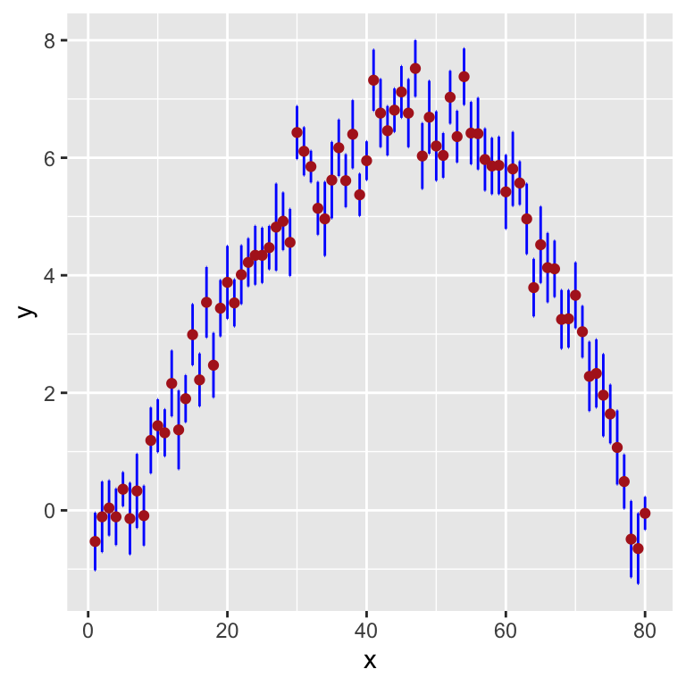
6 Nonlinear Regression
In many data analysis contexts, particularly scientific contexts, it can be the case that one measures a set of \(n\) data tuples \((x_i,Y_i)\), with the goal of uncovering the association between the predictor variables \(\mathbf{x}\) and the response variables \(\mathbf{Y}\). (For simplicity, we will assume that the \(x_i\)’s are fixed and the \(Y_i\)’s are random variables.) At this point, the reader may start thinking “aren’t you just talking about simple linear regression”? And that’s a good question. However, in this chapter, what we are going to do is broaden the scope of simple regression to show how one might uncover nonlinear associations between the predictors and response. We are also going to fold in how one would incorporate estimates of uncertainty into the model-learning process.
So let’s start again: let’s assume that we have \(n\) data tuples, \[ (x_i,Y_i,e_i) \,, \] where \(x_i\) and \(Y_i\) are the predictor and response variable values, and \(e_i\) is the estimated response uncertainty, for datum \(i\). Perhaps our data look something like this:
Our goal is to draw a curve through the points that represents the conditional mean \(E[Y \vert x]\). It should readily apparent that a simple ordinary least-squares model would not be a good representation of the data-generating process in this particular instance. What we want to do is learn a nonlinear model, and as we will see throughout the remainder of the chapter, we will see that there are a number of ways to do this. Also, as hinted at above, we will want to incorporate the uncertainties \(\mathbf{e}\) as weights as we learn models; data point with smaller uncertainties should be given more weight in the learning process than ones with larger uncertainties. Here we will follow the typical approach of utilizing inverse-variance weighting: \[ w_i = \frac{1}{e_i^2} \]
The modeling of nonlinear associations between a predictor variable and a response will naturally involve estimation of parameters; for instance, in polynomial regression, we should determine the optimal value for the polynomial degree, rather than set it by fiat. When parameters are to be estimated as part of the model training process, it is convention to incorporate data-splitting or cross-validation into the training process; in other words, we might first split our data into training and test sets, and then split the training set itself into a smaller training set and a validation set. However, given the relatively small size of our dataset, we will do the following:
- use a 70/30 split to generate training and test sets; and
- use leave-one-out cross validation (or LOOCV) to estimate model parameters.
(To be clear: this is not the only approach to modeling we could take, but we will use this opportunity to introduce and demonstrate LOOCV.) When carrying out LOOCV, we would adopt a particular parameter value (e.g., the polynomial degree), learn a model for the first \(n-1\) data, and generate a prediction for the \(n^{\rm th}\) datum. We would then learn a model for the first \(n-2\) data along with the \(n^{\rm th}\) datum, and generate a prediction for the \((n-1)^{\rm th}\) datum, etc. In this way, we generate a set of predictions for every datum in the training set. We then use these predictions to compute the mean-squared error. The parameter value associated with the lowest MSE value is the “winner.”
For a deeper treatment of the models described in the first five sections below, see Chapter 7 of James et al. (2021).
6.1 Polynomial Regression
A first variant on the simple linear regression model that we will examine is polynomial regression: \[ Y \vert x = \beta_0 + \beta_1 x + \cdots + \beta_d x^d + \epsilon \] To be clear, this is still a “linear model,” as the model coefficients are not raised to any power.
Below, we show how to use LOOCV to determine the optimal polynomial degree. (But first, we will split the data into training and test sets.)
set.seed(101)
s <- sample(nrow(df),round(0.7*nrow(df)),replace=FALSE)
df.train <- df[s,]
df.test <- df[-s,]
d <- 1:9
n.train <- nrow(df.train)
pred <- rep(NA, n.train)
mse <- rep(NA, length(d))
for ( jj in d ) {
for ( ii in 1:n.train ) {
loocv.df <- df.train[-ii,]
lm.out <- lm(y~poly(x, jj, raw=TRUE), data=loocv.df, weights=1/(e^2))
pred[ii] <- predict(lm.out, newdata=df.train[ii,])
}
mse[jj] <- mean((df.train$y-pred)^2)
cat("For degree =", jj, "the LOOCV MSE is", mse[jj], "\n")
}For degree = 1 the LOOCV MSE is 5.77244
For degree = 2 the LOOCV MSE is 0.3994393
For degree = 3 the LOOCV MSE is 0.2147532
For degree = 4 the LOOCV MSE is 0.2085018
For degree = 5 the LOOCV MSE is 0.2179358
For degree = 6 the LOOCV MSE is 0.1926595
For degree = 7 the LOOCV MSE is 0.2094643
For degree = 8 the LOOCV MSE is 0.298704
For degree = 9 the LOOCV MSE is 0.3355489 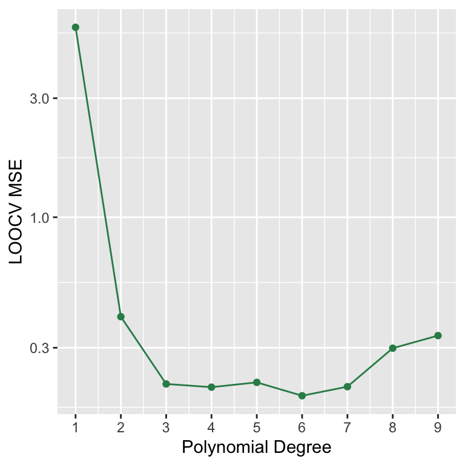
Here, we find that the MSE is minimized for a sixth-degree polynomial. While we could simply adopt that value, we note that (a) the MSE is a random variable (since, if we were to change the random-number-generator seed when creating the training and test sets, the MSE value would change), (b) the MSE value at \(d = 6\) is only very slightly smaller than that at \(d = 3\), and (c) when given a set of otherwise equivalent models, the simplest one is the one we should choose. Here, if we were to perform the exercise of changing the seed and generating MSEs multiple times, we would find that the mean MSE for \(d = 6\) is not statistically significantly smaller than that for \(d = 3\)…and so we adopt the latter value.
Having determined the optimal value for the polynomial degree, we first learn the polynomial regression model with all the training data…
lm.out <- lm(y~poly(x, 3, raw=TRUE), data=df.train,
weights=1/(e^2))
data.frame("Estimate"=summary(lm.out)$coefficients[,1]) Estimate
(Intercept) -1.000393e+00
poly(x, 3, raw = TRUE)1 2.353878e-01
poly(x, 3, raw = TRUE)2 2.169070e-04
poly(x, 3, raw = TRUE)3 -3.837579e-05…then generate predictions for the test set…
pred <- predict(lm.out, newdata=df.test)
cat("The MSE is",round(mean((df.test$y-pred)^2), 3), "\n")The MSE is 0.309 …and last, overlay the model on all the data:
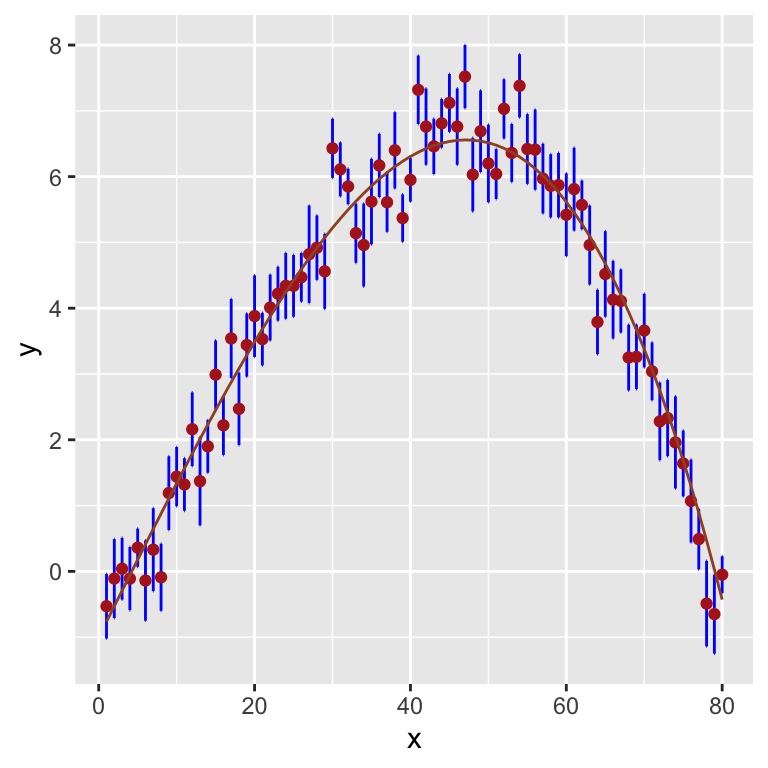
In the plot above, one might notice that not all the error bars overlap the model. This is fine, and to be expected: if the normal distribution governs the uncertainty, then we expect only \(\approx\) 68% of the error bars to overlap the model (or \(\approx\) 95% if the bars represent so-called “2errors”).
6.2 Regression Splines
A “global” polynomial model (i.e., one defined to be the same for the entire dataset) has a possible disadvantage: because such a model is defined for all the data, it can be insufficiently flexible.
The first example of a so-called “local” model (or “locally adaptable” model, i.e., one that can adapt to localized data variations) is the regression spline model. (To be clear: given the relatively smooth way in which our response values vary as a function of \(x\), we do not expect the regression spline model to provide results that are substantially better than, if actually better than, the result observed for the polynomial regression model above. However, that will not stop us from illustrating how one would learn the model!)
In a regression spline model, the range of values of \(x\) is divided into \(K+1\) non-overlapping segments, with the \(K\) boundaries between segments being dubbed knots. For instance, we can express a quadratic polynomial model with one knot as \[\begin{align*} Y_i \vert x_i = \left\{ \begin{array}{ll} \beta_{0,1} + \beta_{1,1}x_i + \beta_{2,1}x_i^2 + \epsilon_i & x_i < c \\ \beta_{0,2} + \beta_{1,2}x_i + \beta_{2,2}x_i^2 + \epsilon_i & x_i \geq c \end{array} \,, \right. \end{align*}\] This is a perfectly valid model, but we note that the model segment to the left of the knot will not necessarily join up smoothly with that to the right of the knot. So we typically choose to impose the constraints that the model function itself, and its first and second derivatives, are continuous at each knot.
Now, leaving aside the mathematical details, it is the case that a model like the one given above can be re-expressed using basis functions. For instance, we can express the quadratic polynomial model above with one knot as \[ Y_i \vert x_i = \beta_0 + \beta_1 b_1(x_i) + \beta_2 b_2(x_2) + \beta_3 b_3(x_3) + \epsilon_i \,, \] where the \(b_i(\cdot)\)’s are members of a chosen family of basis functions. Here, we will without loss of generality adopt the so-called B-spline basis. The three basis functions for a one-knot/quadratic polynomial model are displayed below, as defined within the range of values of \(x\).
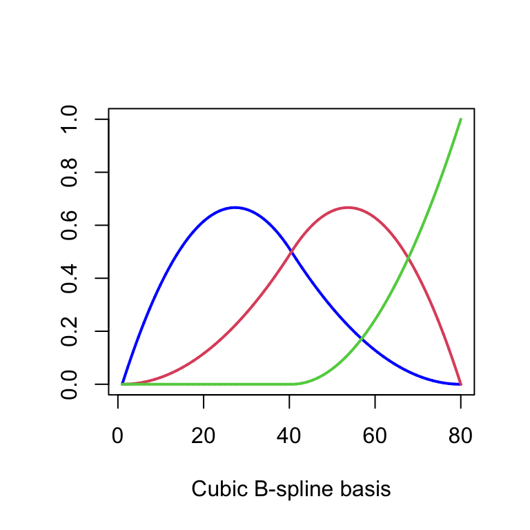
Note that if \(d\) is the degree of the polynomial and \(K\) is the number of knots, the overall number of basis functions in the model will be \(d+K\).
Below, we show how to use LOOCV to determine the optimal polynomial degree for a one-knot regression spline model, with the knot being placed by fiat at the median value of \(x\), 40.5.
d <- 1:4
pred <- rep(NA, n.train)
for ( jj in d ) {
for ( ii in 1:n.train ) {
loocv.df <- df.train[-ii,]
lm.out <- lm(y~suppressWarnings(bs(x, degree=jj, knots=c(40.5))), data=loocv.df, weights=1/(e^2))
pred[ii] <- predict(lm.out, newdata=df.train[ii,])
}
mse <- mean((df.train$y-pred)^2)
cat("For degree =", jj, "the LOOCV MSE is", mse, "\n")
}For degree = 1 the LOOCV MSE is 17.21116
For degree = 2 the LOOCV MSE is 5.681544
For degree = 3 the LOOCV MSE is 9.790897
For degree = 4 the LOOCV MSE is 11.8805 We adopt the quadratic polynomial (\(d = 2\)) model here.
lm.out <- lm(y~bs(x, degree=2, knots=c(40.5)),
data=df.train, weights=1/(e^2))
data.frame("Estimate"=summary(lm.out)$coefficients[,1]) Estimate
(Intercept) -0.8628274
bs(x, degree = 2, knots = c(40.5))1 5.4126798
bs(x, degree = 2, knots = c(40.5))2 8.9930575
bs(x, degree = 2, knots = c(40.5))3 0.5245555pred <- predict(lm.out, newdata=df.test)
round(mean((df.test$y-pred)^2), 3)[1] 0.318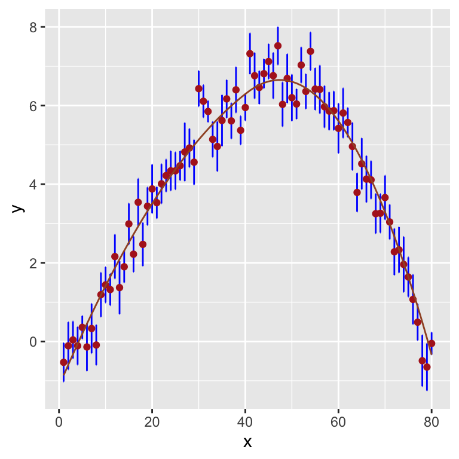
The test-set mean-squared error is 0.318, versus 0.309 for the polynomial regression model. The models give (not suprisingly in this context) essentially identical results. (In such a case we would adopt the simpler [and smoother] model, which is the global polynomial regression model.)
Note that the three basis function coefficients above correspond to each of the three curves in the basis function figure further above; for an arbitrary value of \(x\), the prediction from the model would be the basis intercept term plus the first coefficient times the amplitude of the blue basis function at the value \(x\), etc. We demonstrate this below, for \(x = 10\).
x <- 10
round(predict(lm.out, newdata=data.frame("x"=x)), 3) 1
1.416 w <- which(bs.x==x)
b <- summary(lm.out)$coefficients[,1]
round(b[1] + b[2]*spl[w,1] + b[3]*spl[w,2] + b[4]*spl[w,3], 3)(Intercept)
1.416 It is often the case that in a regression spline model, we would not know a priori where to place knots. When that is the case, we would specify the number of degrees of freedom instead. This corresponds to the number of basis functions (not including the intercept term!) that would be used to build up the model.
dof <- 3:6
pred <- rep(NA, n.train)
for ( jj in dof ) {
for ( ii in 1:n.train ) {
loocv.df <- df.train[-ii,]
lm.out <- lm(y~suppressWarnings(bs(x, df=jj)), data=loocv.df, weights=1/(e^2))
pred[ii] <- predict(lm.out, newdata=df.train[ii,])
}
mse <- mean((df.train$y-pred)^2)
cat("For dof =", jj, "the LOOCV MSE is", mse, "\n")
}For dof = 3 the LOOCV MSE is 28.31229
For dof = 4 the LOOCV MSE is 8.538485
For dof = 5 the LOOCV MSE is 8.7427
For dof = 6 the LOOCV MSE is 13.54418 Here we adopt four degrees of freedom.
lm.out <- lm(y~bs(x, df=4),
data=df.train, weights=1/(e^2))
data.frame("Estimate"=summary(lm.out)$coefficients[,1]) Estimate
(Intercept) -0.5844721
bs(x, df = 4)1 2.8585791
bs(x, df = 4)2 10.2763816
bs(x, df = 4)3 5.1028602
bs(x, df = 4)4 0.3166002pred <- predict(lm.out, newdata=df.test)
round(mean((df.test$y-pred)^2), 3)[1] 0.307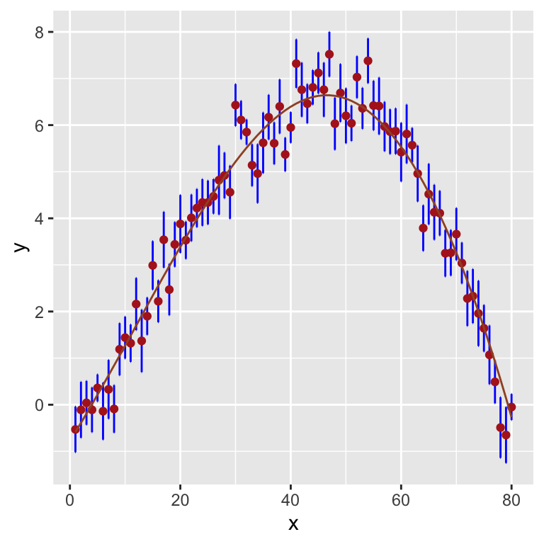
Now the test-set MSE is slightly better than that for the polynomial regression model. (But in the end, again, the values are for all practical purposes identical.)
6.2.1 Digression: Regression Splines v. Spline Interpolation
A potentially confusing aspect to using splines is that some functions use them in the context of regression (i.e., they incorporate the idea of randomness) and some use them deterministically (i.e., as interpolators that thread functions through every point).
# note: uncertainties not taken into account
spl.out <- spline(df$x, df$y)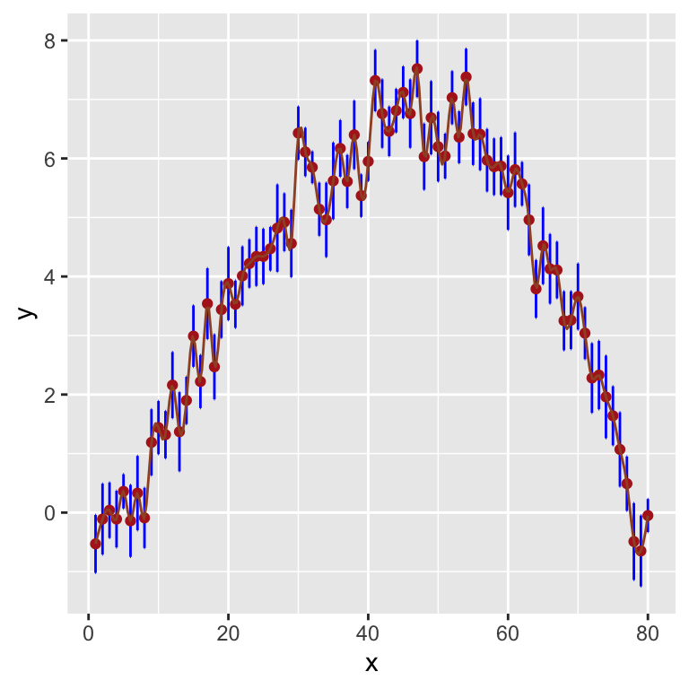
If your output looks like this, you have not implemented a regression spline model!
6.3 Smoothing Splines
A variation on the regression spline model is the smoothing spline model, which penalizes excessive model “wiggliness,” as measured via the second derivative of the model function. (A second derivative represents the rate of change of a function’s slope; if the function is very wiggly, then the slope changes rapidly and in absolute terms the average value of the second derivative will be large.)
The objective function that we wish to minimize is \[\begin{align*} \sum_{i=1}^n (Y_i - \hat{Y}_i)^2 + \lambda \int f''(x)^2 dx \,, \end{align*}\] where \(\lambda\) is a tuning parameter: the smaller the value of \(\lambda\), the “wigglier” the final model is allowed to be.
Note that in a smoothing-spline model, there is no need for us to define knots, as in theory they are placed at the coordinates of every datum. (In practice a reduced set is used.)
When learning a smoothing-spline model, we can
- choose the effective number of degrees of freedom by setting \(\lambda\); or
- use cross-validation to determine the optimal value of \(\lambda\).
Because \(\lambda\) is continuously valued and has a value that might be hard to estimate a priori, the more analytically efficient option is to use cross-validation. Setting cv=TRUE in the call to smooth.spline() eliminates the need for us to use LOOCV here.
ss.out <- suppressWarnings(
smooth.spline(x=df.train$x,
y=df.train$y,
w=1/(df.train$e^2),
cv=TRUE)
)
ss.outCall:
smooth.spline(x = df.train$x, y = df.train$y, w = 1/(df.train$e^2),
cv = TRUE)
Smoothing Parameter spar= 0.7393732 lambda= 0.000647435 (15 iterations)
Equivalent Degrees of Freedom (Df): 7.138138
Penalized Criterion (weighted RSS): 8.537291
PRESS(l.o.o. CV): 0.2020227ss.pred <- predict(ss.out, x=df.test$x)
round(mean((df.test$y-ss.pred$y)^2), 3)[1] 0.322The effective number of degrees of freedom is 7.14 and the test-set MSE is 0.322.
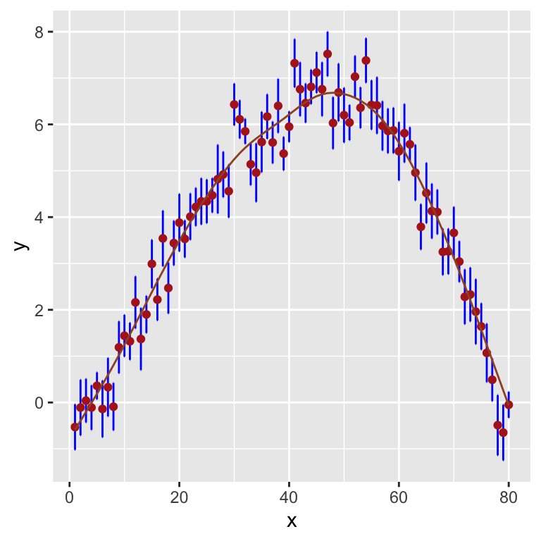
6.4 Local Polynomial Regression
This is a “localized” version of a global polynomial regression model that we learn using the loess() function: at each point \(x_o\), a polynomial is fit, with more weight being given to nearby data points and less to those that are farther away. Because this is a polynomial-based model, one of the parameters will be degree (default 2), and because this is a local model, another will be the effective range of data around \(x_o\) that will contribute to estimating \(Y \vert x_o\) (here, span, which has a default value of 0.75: the proportion of data points that contribute to the estimate). A larger value of span means more neighboring data weigh in on the estimate made at \(x_o\); therefore, larger span values produce smoother regression functions.
Below, we use LOOCV to determine the appropriate span value given a local quadratic polynomial. (Note that the control argument is included to allow model extrapolation; for instance, if the last data point is held out, the model must be extrapolated to generate a prediction at that point.)
span <- seq(0.1, 0.9, by=0.1)
pred <- rep(NA, n.train)
for ( jj in span ) {
for ( ii in 1:n.train ) {
loocv.df <- df.train[-ii,]
loess.out <- loess(y~x, data=loocv.df,
control = loess.control(surface = "direct"),
weights=1/(e^2), span=jj)
pred[ii] <- predict(loess.out, newdata=df.train[ii,])
}
mse <- mean((df.train$y-pred)^2)
cat("For span =", jj, "the LOOCV MSE is", mse, "\n")
}For span = 0.1 the LOOCV MSE is 0.4408543
For span = 0.2 the LOOCV MSE is 0.2391312
For span = 0.3 the LOOCV MSE is 0.2110647
For span = 0.4 the LOOCV MSE is 0.2195087
For span = 0.5 the LOOCV MSE is 0.2201216
For span = 0.6 the LOOCV MSE is 0.2157492
For span = 0.7 the LOOCV MSE is 0.2139264
For span = 0.8 the LOOCV MSE is 0.2148277
For span = 0.9 the LOOCV MSE is 0.2199544 We will adopt the value of 0.7 for span.
loess.out <- loess(y~x, data=loocv.df, weights=1/(e^2), span=0.7)
pred <- predict(loess.out, newdata=df.test)
round(mean((df.test$y-pred)^2), 3)[1] 0.317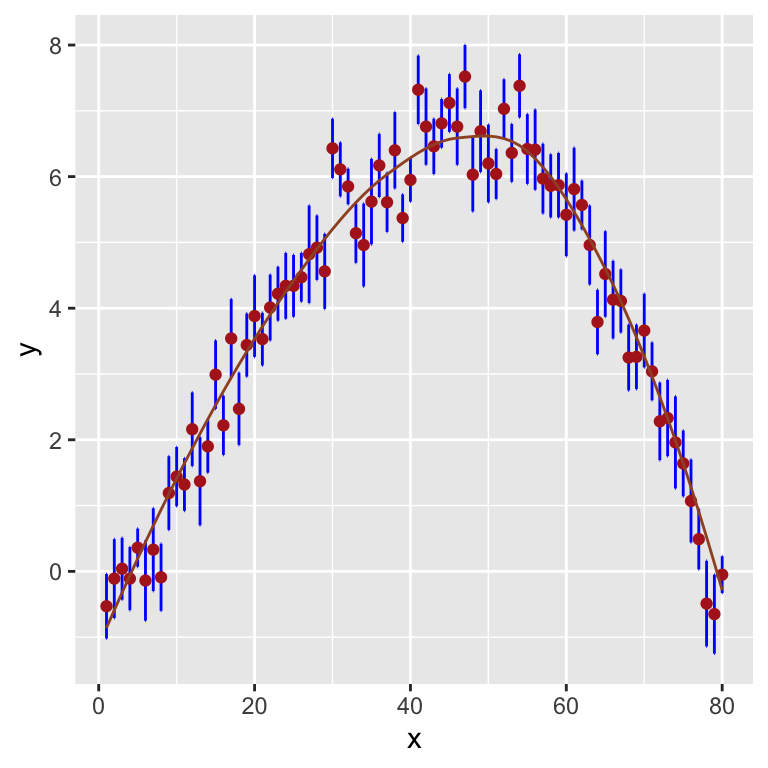
The test-set MSE is 0.317.
6.5 Generalized Additive Models
We will wrap up this portion of the chapter by pivoting from simple regression models to generalized additive models, or GAMs. GAMs are multiple regression models that allow us to effectively add together a number of simple nonlinear models to form a nonlinear “whole.” The generalized additive model is \[\begin{align*} Y_i \vert x_i = \beta_0 + f_1(x_{1,i}) + \cdots + f_p(x_{p,i}) + \epsilon_i \,, \end{align*}\] where \(x_{j,i}\) is the value of the \(j^{\rm th}\) predictor for the \(i^{\rm th}\) object, and \(f_j(\cdot)\) is a function applied to the data in the \(j^{\rm th}\) predictor column only…this could be a B-spline model, or a global polynomial model, etc.
Why would we use GAMs?
- They provide flexible nonlinear modeling with output that we can (possibly) use to make inferential statements…i.e., GAMs are not black-box models.
And why might we not use GAMs?
- The “phase space” of model possibilities is huge: where do we use B-splines (and where are the knots)? where do we use polynomial regression (and what is the degree)? where…?
In the end…if model flexibility is needed and inference is not of utmost importance, working with simpler-to-implement nonlinear models, and specifically machine learning models, will generally be preferable to working with GAM models.
6.5.1 Example
In the following example, we will contrast the results of learning linear regression and GAM models using the first example of the mgcv package’s gamSim() function. The sample size is \(n = 400\), there are four predictor variables (x0 through x3), and the response variable is y. To keep things simpler, we will not split the data.
library(mgcv)Loading required package: nlmeThis is mgcv 1.9-1. For overview type 'help("mgcv-package")'.set.seed(101)
df.gam <- gamSim(1, n=400, dist="normal", scale=2)[, 1:5]Gu & Wahba 4 term additive modellm.out <- lm(y~., data=df.gam)
lm.pred <- predict(lm.out)
round(mean((df.gam$y-lm.pred)^2), 3)[1] 9.482The mean-squared error is 9.482 and the diagnostic plot showing the predicted response values versus the observed ones is given below.
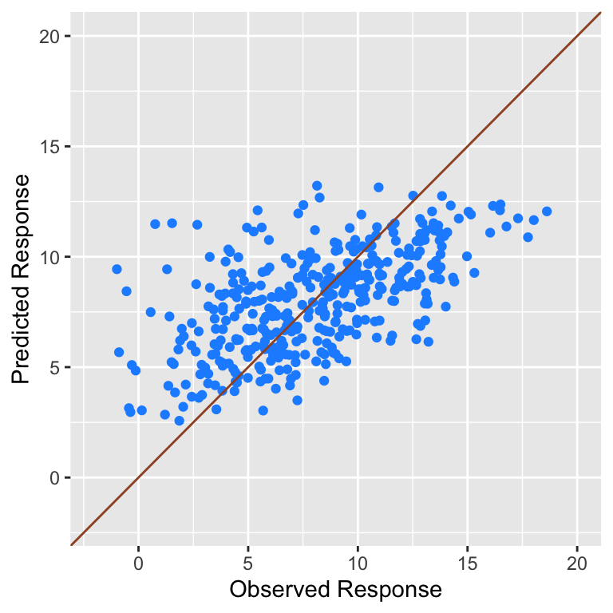
The linear model does not represent well the data-generating process, as is evidenced by the fact that slope of the data points is not very different from zero. (However, there is some amount of underlying linear association: the adjusted \(R^2\) is 0.346.)
Now we learn a GAM model assuming a B-Spline basis for each of the predictor variables:
gam.out <- gam(y~s(x0, bs="bs")+s(x1, bs="bs")+s(x2, bs="bs")+s(x3, bs="bs"), data=df.gam)
gam.pred <- predict(gam.out)
round(mean((df.gam$y-gam.pred)^2), 3)[1] 3.837The MSE decreases markedly, to 3.837, and the diagnostic plot indicates the heightened model quality. (Here, the adjusted \(R^2\) is 0.727.)
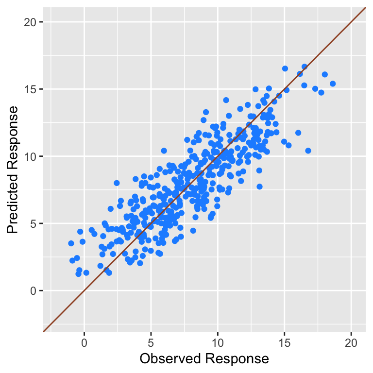
To make inferences regarding the GAM model, we can look at both the table of smooth terms and a partial residuals plot.
summary(gam.out)$s.table edf Ref.df F p-value
s(x0) 3.050558 3.750961 17.377431 0.0000000
s(x1) 2.782932 3.444916 89.338781 0.0000000
s(x2) 7.003643 7.767556 81.383268 0.0000000
s(x3) 3.755035 4.587286 1.663008 0.1264493plot(gam.out, pages=1, residuals=TRUE)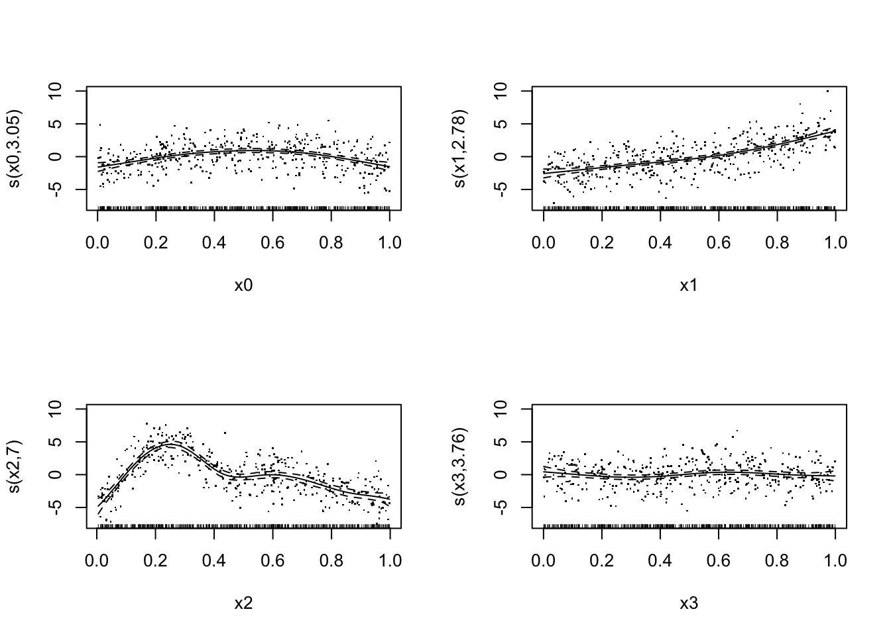
The edf column in the summary shows the “effective degrees of freedom” for the B-spline basis model for each predictor variable; smaller values indicate less wiggliness, while larger values indicate more wiggliness. We observe that the largest edf value is 7.00, for the predictor variable x2, and in the partial residuals plot we can see how for that variable the association with the response is very nonlinear. Also, note the \(p\)-value for the variable x3: this indicates that this variable is not statistically significantly associated with the response variable, a result borne out by the appearance of its partial residual plot.
6.6 Numerical Optimization
We conclude this chapter by introducing two model-learning techniques that go beyond the use of, e.g., polynomials and/or spline functions.
- Numerical optimization. We utilize methods of numerical optimization when we know (or at least, can assume) a parametric form for the regression model, but cannot use pre-coded functions in
Rto learn the model coefficients. - Kernel density estimation. We work with KDE when we do not know nor can assume a parametric form for the regression model. In KDE, as we will see, we “let the data do the talking.”
Let’s start with numerical optimization. Let’s suppose that we have read that for our data the underlying model is posited to be \[ f(x) = \sin\left(\frac{\pi}{b}x\right) x^a \,, \] where \(a\) and \(b\) are constants of unknown value. Our goal, given our data, is to determine numerical estimates for \(a\) and \(b\).
Perhaps at first we will decide that we can do this by hand; we will pick a pair of values \((a_o,b_o)\), plug them into the formula, and overplot the data with \(f(x)\). We decide to start with \(a = 0.6\) and \(b = 100\):
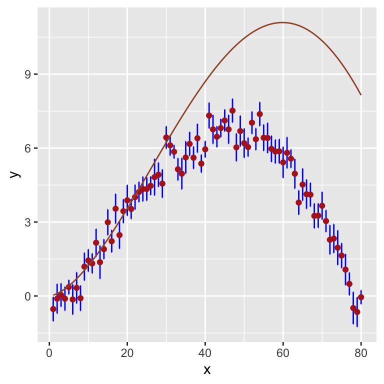
This doesn’t quite work. So we should hand-pick new values for \(a\) and \(b\) and try again…or…we can adopt a better, more efficient algorithm.
What we want to do here is code an numerical optimizer. See the figure below. In it, \(x\) represents a quantity being optimized (e.g., \(a\)), and \(g(x)\) represents some function of \(x\) (the objective function) that quantifies how closely the model aligns with the data. A numerical optimizer works to minimize the objective function in a computationally efficient manner. However, typical off-the-shelf optimizers are “local” optimizers\(-\)ones that use, e.g., gradient descent to reach the nearest local minimum\(-\) and they might miss the overall global minimum entirely. For instance, in the figure below, if we were to start the optimization process by guessing \(x = -8\), we might end up at \(x = -3\), a local minimum, instead of \(x = 4\), the global one. Thus it is critical for one to always visualize a learned model against the response data, to check to see if one can safely conclude that the global minimum has been reached.
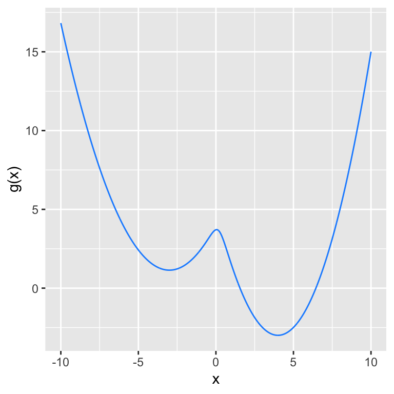
An objective function that is often used in real-life applications is the chi-square function: \[ \chi^2 = \sum_{i=1}^n \frac{(Y_i - \hat{Y}_i)^2}{\hat{\sigma}_i^2} = \sum_{i=1}^n (Y_i - \hat{Y}_i)^2 \frac{1}{\hat{\sigma}_i^2} \,, \] where \(\hat{y}_i\) is the predicted value for \(Y_i\) and \(\hat{\sigma}_i\) is the estimated uncertainty of \(Y_i\). (Here, \(\hat{\sigma}_i = e_i\). When uncertainties are not provided in a dataset, we may be able to estimate them, such as is the case when the \(Y_i\)’s represent counts, and we can set \(e_i\) to \(\sqrt{Y_i}\) or \(\sqrt{\hat{Y}_i}\), with the latter being preferred from a model bias perspective.) Now note the way we write \(\chi^2\): it is the sum of squared errors, albeit with the errors being weighted. The weights themselves are “inverse-variance” weights, as we have seen before.
Before continuing, we will note two useful properties of the \(\chi^2\) objective function.
- Because \(\vert Y_i - \hat{Y}_i \vert\) should be \(\approx e_i\) in a curve-fitting context, we can take the optimized value of \(\chi^2\) and divide by \(n-p\) (where \(p\) is the number of free parameters in \(f(x)\)…here, \(p=2\)) and check to see if the value is approximately 1
- We can utilize a \(\chi^2\) goodness-of-fit test to see if the optimized model provides an acceptable fit to the data. The \(p\)-value for the GoF test is
1 - pchisq(chi2.min,n-p) # chi2.min is value of chi2 for optimized parametersBelow, we demonstrate how we would use R’s optim() function to optimize the values of \(a\) and \(b\) in our model. (Note that if we only needed to optimize the value of one parameter, we would probably use the optimize() function instead.)
fit.fun <- function(par, data)
{
x <- data$x
y <- data$y
e <- data$e
return( sum((y-sin(x*pi/par[2])*x^par[1])^2/e^2) )
}
par <- c(0.6, 100) # initial guesses for a, b
op.out <- suppressWarnings(optim(par, fit.fun, data=df.train))
round(op.out$value, 3) # the minimum chi-square value[1] 48.269round(op.out$par, 3) # the estimated parameter values[1] 0.505 79.585In the call to optim(), the first two arguments are par (a vector of parameter values, which here is of length 2 and represents \(a\) and \(b\)) and fit.fun. fit.fun() itself expects par as its first argument; however, for it to actually work, we need to pass in the data frame…so back in the call to optim(), we need to explicit say what the variable data represents. We do that by tacking on a third argument, data=df, where df is the data frame defined earlier that has the values of \(x\), \(y\), and \(e\).
Finally, note how we make an initial guesses for \(a\) and \(b\) (par <- c(0.6,100)). Our optimizer works fine with these guesses, but beware that in more complicated problems we run the risk of not finding the global minimum for \(\chi^2\) if our initial guess is “bad.” (For instance, when we run the code above with an initial guess of \(a = 0.75\), the optimizer moves to a false minimum!)
We find that \(\chi^2 = 48.269\) and that \(\chi^2/(n-p) = \chi^2/(n-2) = 48.269/54 \approx 0.894\)…so we would view the model as being an acceptable model. (Note that the training set has \(n = 56\) data points.) We reinforce this conclusion by running the chi-square GoF test:
round(1 - pchisq(op.out$value, nrow(df.train)-1), 3)[1] 0.728The \(p\)-value is 0.728; we fail to reject the null hypothesis that our model is an acceptable one.
We have to do a little more work here to determine the test-set MSE, but not much:
pred <- sin(df.test$x*pi/op.out$par[2])*(df.test$x)^op.out$par[1]
round(mean((df.test$y-pred)^2), 3)[1] 0.329Our posited model is apparently not quite as good at describing the data-generating process as, e.g., the global polynomial regression model.
To reiterate the point made above about false minima and the need to visualize results, below we show what happens when our initial guess for \(a\) is 0.75:
Chi-square: 5691.088 Parameter estimates: -83291.1 59129.15 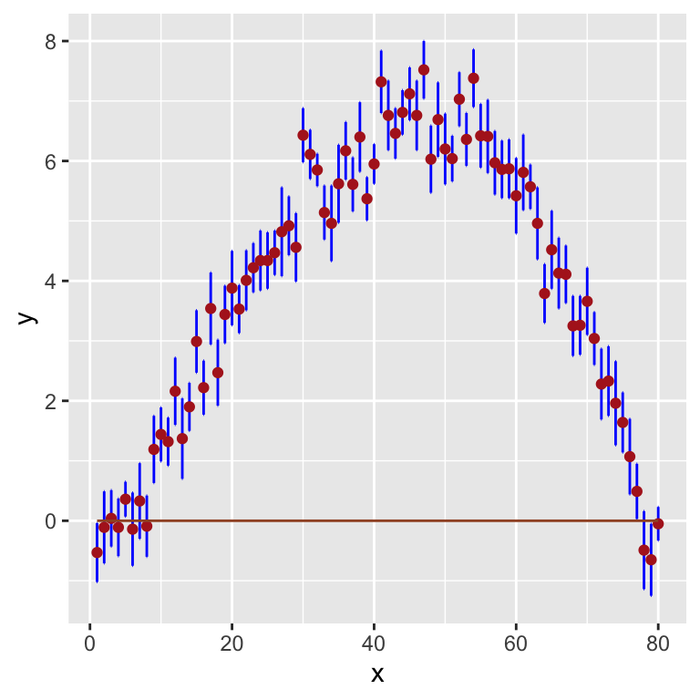
Never blindly accept the output from an optimizer without doing due diligence!
6.7 Kernel Density Estimation
Let’s suppose that we have collected \(n\) independent and identically distributed (and continuously valued) data sampled from some distribution: \[ X_1,\ldots,X_n \sim P \,. \] As researchers, we often make assumptions about the identity of \(P\); for instance, we might assume the data are at least approximately normally distributed, and then carry out statistical inferences using methods developed for normal data. But sometimes making assumptions is not necessary: we simply wish to estimate the shape of the underlying distribution.
To be clear, the \(X_i\)’s are not the predictor values that we have been using throughout the chapter. Above, we assumed a context in which we set the value of a predictor variable (\(x\)), measured a response (\(Y \vert x\)), and then learned the underlying regression function \(Y \vert x = f(x)\). Here, we are assuming there is some distribution \(P\) with unknown probability density function \(f_X(x)\) that we wish to estimate. Thus the material in this section is not directly related to the material above, other than it involves learning a univariate function given data.
To do this, we utilize kernel density estimation or KDE.
A kernel \(K(z)\), where \(z = x-x_o\), is a weighting function that is defined relative to a fixed coordinate \(x_o\) (the place where we want to estimate the probability density; this estimate is \(\hat{f}_{X,h}(x_o)\)). (We will define the subscript \(h\) below.) It has one required property, namely that \(K(z) \geq 0\) for all values \(z\), but it is the case that kernels utilized in statistical learning satisfy two other properties as well:
- the area under \(K(z)\) is equal to one; and
- \(K(-z) = K(z)\), i.e., the kernel function is symmetric around \(x_o\).
Below we show examples of three commonly used kernel functions: the Gaussian kernel (red), the Epanechnikov kernel (green), and the triangular kernel (blue). Note that if we are given a sufficient amount of data, the kernel we choose will have a minimal effect on the qualitative conclusions we reach in a KDE-based analysis.
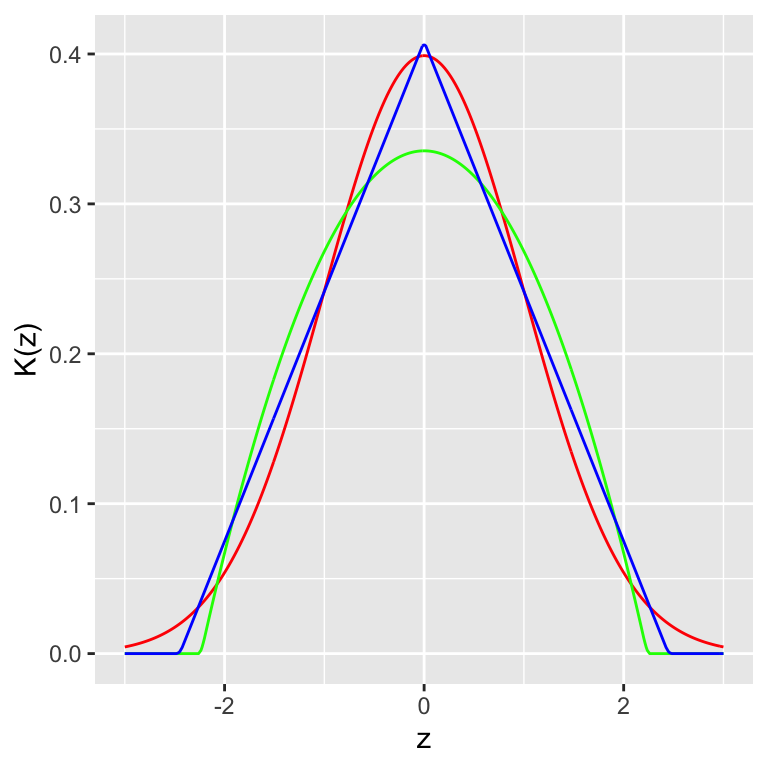
A general rule of thumb: the choice of kernel will usually have little effect on estimation, particularly if the sample size is large! The Gaussian kernel (i.e., a normal pdf) is by far the most common choice.
Kernel density estimation is a so-called nonparametric technique for attempting to estimate the pdf with as few assumptions about its form as possible. (One can think of “nonparametric” as meaning “data-driven.”) The KDE estimator is defined as \[ \hat{f}_{X,h}(z) = \frac{1}{n} \sum_{i=1}^n \frac{1}{h} K\left( \frac{z}{h} \right) \,; \] when we utilize, e.g., the Gaussian kernel, which is the standard normal function \[ K(u) = \frac{1}{2\pi} \exp\left(-\frac{u^2}{2}\right) \,, \] then \[ \hat{f}_{X,h}(z) = \frac{1}{n} \sum_{i=1}^n \frac{1}{2\pi h^2} \exp\left(-\frac{(x-X_i)^2}{2h^2}\right) \,. \] In other words, the kernel density estimate at \(x\) is the average of \(n\) normal probability density functions, one defined for each datum \(X_i\) and evaluated at the coordinate \(x\). In the figure below, we see that the KDE when we have one datum at \(x = -2\), three data at \(x = 0\), and two data at \(x = 3\) is a superposition of six separate Gaussian kernels, each with the same specified width. In the equation above, \(h\) plays the role of a standard deviation; in KDE, our goal is to determine the optimal value of this parameter. In general, we would call \(h\) the “smoothing parameter.”
x <- c(-2,0,0,0,3,3)
g <- density(x,bw=0.2)
df.krn <- data.frame("gx"=g$x,"gy"=g$y)
library(ggplot2)
ggplot(data=df.krn, mapping=aes(x=gx,y=gy)) +
geom_line(col="red") +
xlab("x") + ylab(expression(paste(hat(f),"(x)"))) +
geom_segment(x=-2,xend=-2,y=0,yend=0.125,col="black") +
geom_segment(x=0,xend=0,y=0,yend=0.375,col="black") +
geom_segment(x=3,xend=3,y=0,yend=0.25,col="black")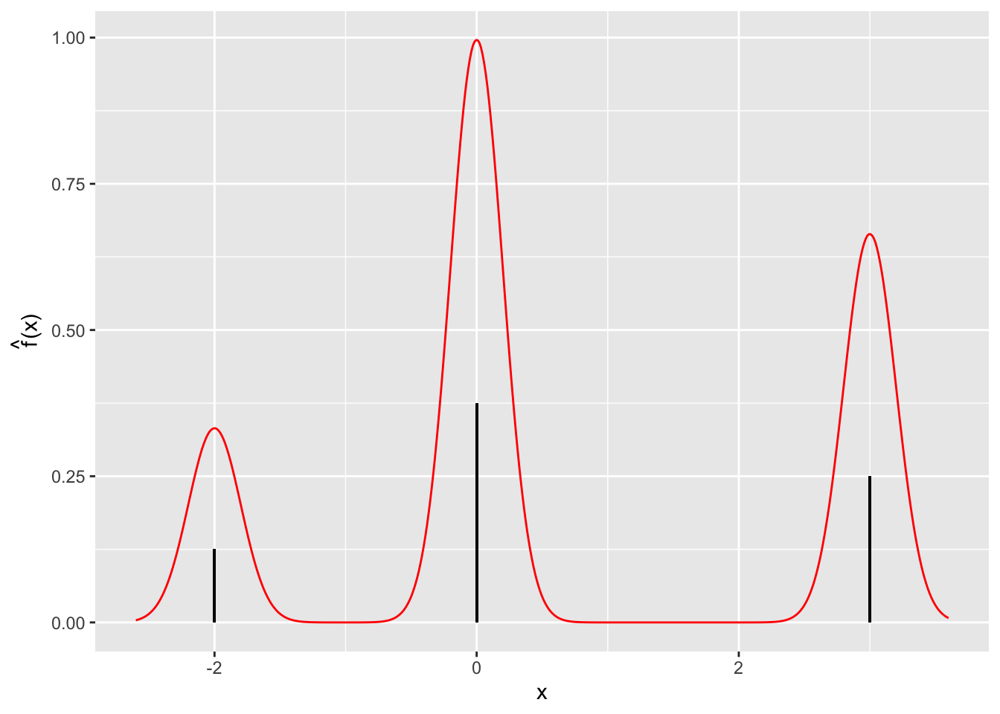
Before continuing…where have we seen the concepts of kernels and nonparametric techniques before?
- Local polynomial regression implicitly utilizes kernels, with the
spanparameter there being what we call \(h\) here. - In exploratory data analysis, the histogram is a simple nonparametric estimator of the underlying distribution for a set of data; it is not a kernel technique, per se, but rather one in which we define a series of bin boundaries and then determine the proportion of the dataset within each bin. However, when we construct a histogram, we do borrow the idea of a smoothing parameter \(h\) from KDE, as we can make the bins narrower (less smoothing) or wider (more smoothing).
6.7.1 Example
Let’s assume that we have collected a set of data whose histogram appears like so:
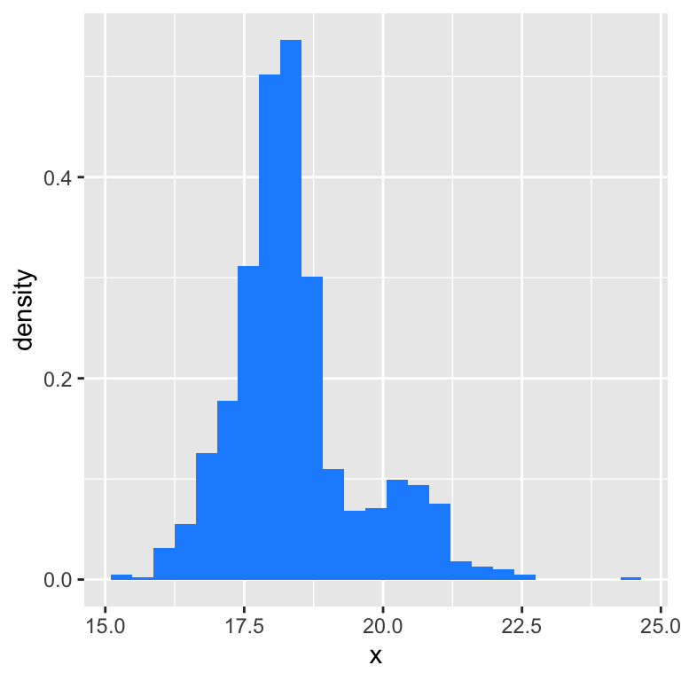
We can see that the data exhibit bi-modality, and thus that we cannot simply assume that the underlying distribution is a normal distribution or any of the other standard distributions that we might know. Again, this is the setting of KDE: to estimate a distribution’s shape when assumptions cannot be made.
Below, we use R’s density() function (with a Gaussian kernel) to generate a distribution estimate. Density estimators come with so-called “plug-in” estimates of the smoothing parameter (or “bandwidth”), and we will utilize that first:
den.out = density(x)
cat("The default bandwidth = ",round(den.out$bw,3),"\n")The default bandwidth = 0.179 Let’s plot the density estimate (in black) on top of histogram.
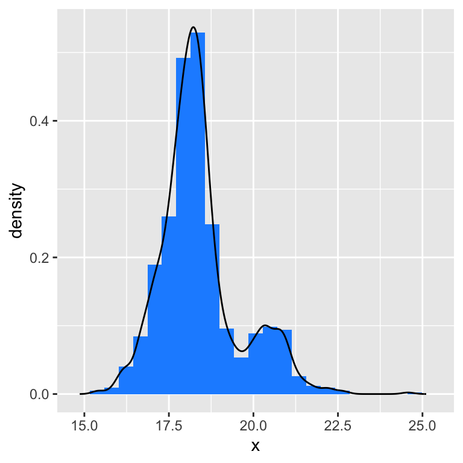
This looks pretty good! If it had been necessary, we could have implemented, e.g., LOOCV in order to determine the optimal bandwidth. However, implementing LOOCV is a bit harder here because there is no response variable and thus there is no mean-squared error metric; rather, we would work with the mean integrated squared error (MISE). The details of working with the MISE are beyond the scope of the current book.
Before wrapping up, we will point out one other “feature” of kernel density estimation: boundary bias. In the example above, there is no boundary bias, per se, because there are no data near the lower and upper boundaries on \(x\). (Meaning, to be clear, that we are able to detect data at small and large values of \(x\) but we do not observe any.) What if we could only observe data over a limited range of \(x\) values?
x <- x[x>=18 & x <=20]
den.out = density(x)
cat("The default bandwidth = ",round(den.out$bw,3),"\n")The default bandwidth = 0.104 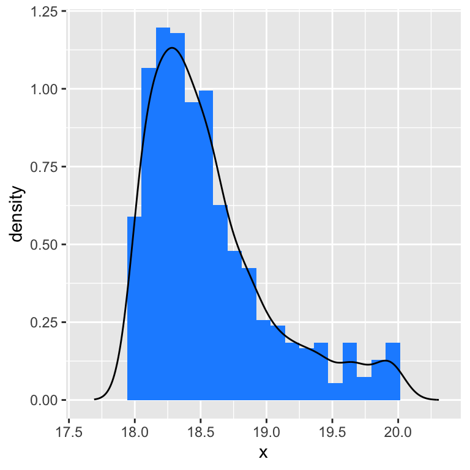
Kernel density estimation involves smoothing; the larger the value of \(h\), the greater the degree of smoothing, and the more density that will “leak” beyond the data boundaries when there are data near those boundaries. Here, we see that KDE posits some amount of density below \(x = 18\) and above \(x = 20\), whereas we would want all the density to lie within the range of the data. There is no unique mechanism for dealing with boundary bias, although one common one is to “remove” the density outside of the data range and to reset (or “renormalize”) the density values inside the range such that the area under the truncated density curve is 1.
# What is the estimated density inside the data range?
l <- den.out$x >= 18 & den.out$x <= 20
delta.x <- (max(den.out$x) - min(den.out$x))/(den.out$n-1)
sum(den.out$y[l] * delta.x)[1] 0.9675897den.x <- den.out$x[l]
den.y <- den.out$y[l] / sum(den.out$y[l] * delta.x)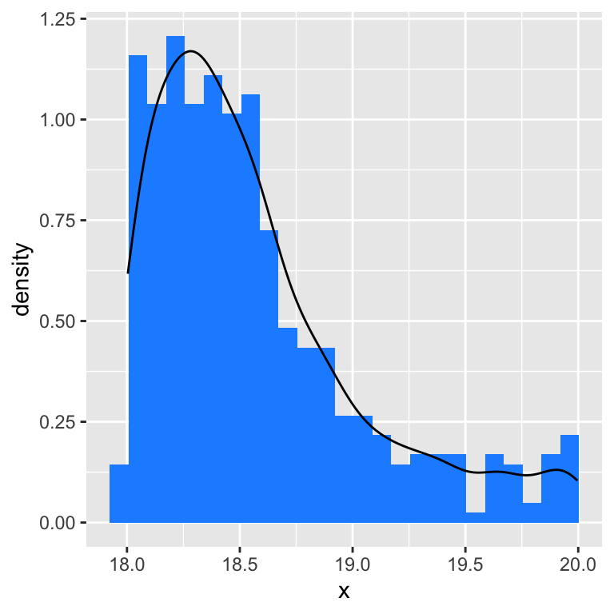
Note that the appearance of the left-most histogram bin is affected by ggplot’s algorithmic choice of bin boundaries; one can override this behavior by explicitly defining the boundaries.